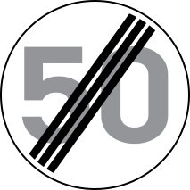

Loading...

End of maximum speed limit
🚫 Regulatory Signs
📖 Description
This sign indicates that the previously imposed maximum speed limit is no longer in effect. After passing this sign, drivers must follow the general speed limits applicable to the type of road unless a new limit is posted.